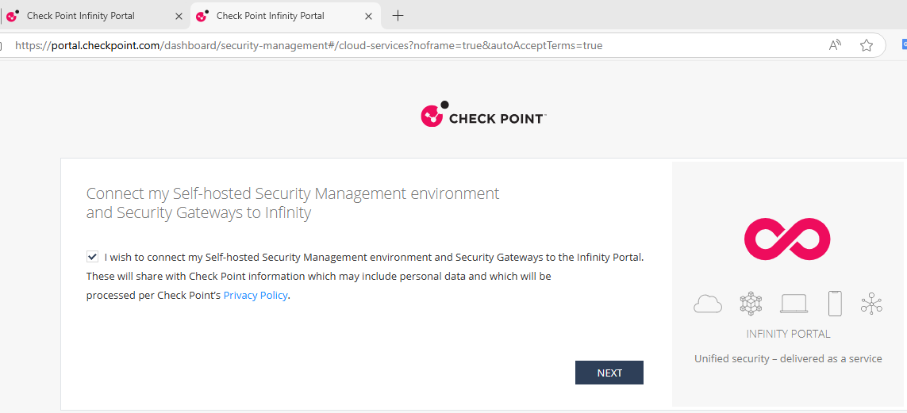
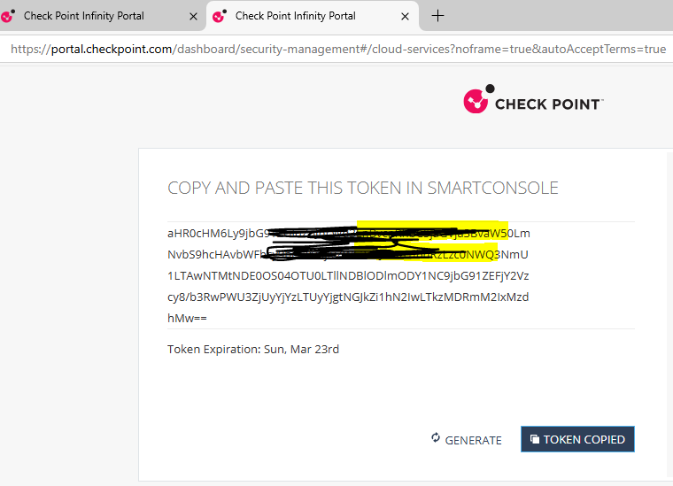
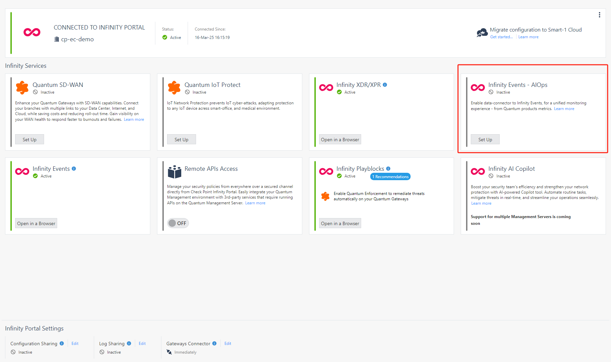
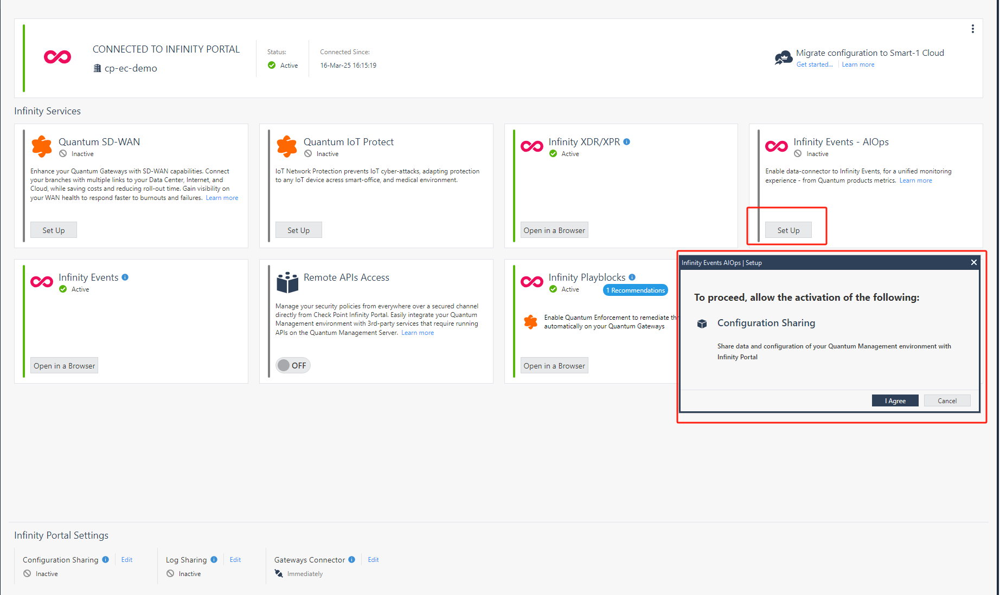
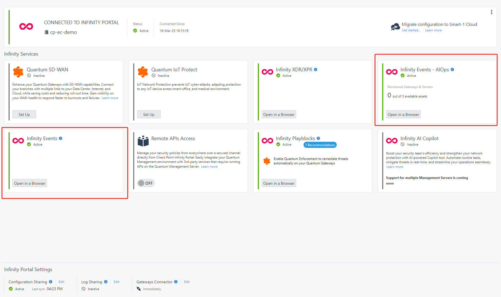
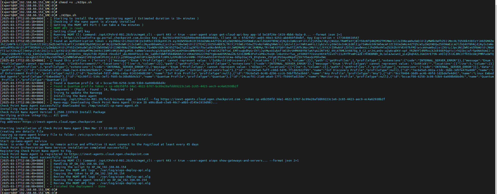
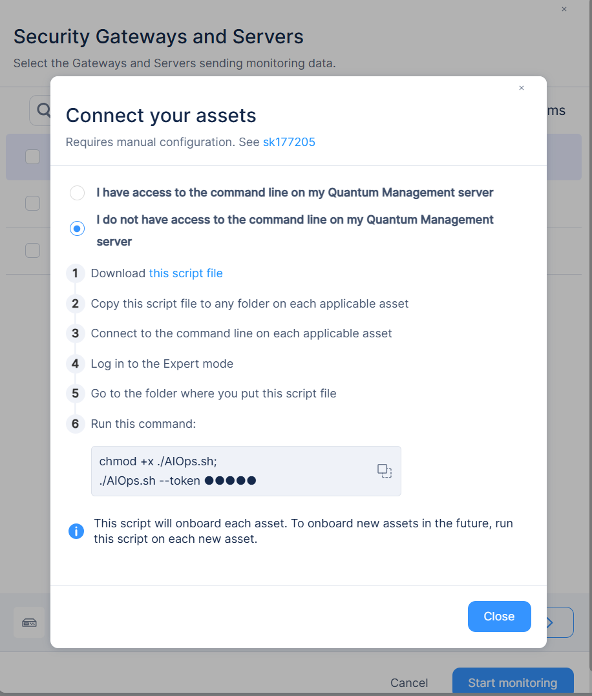
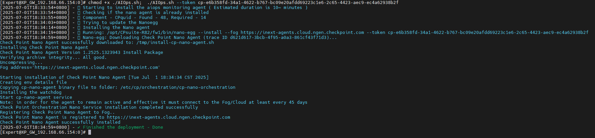
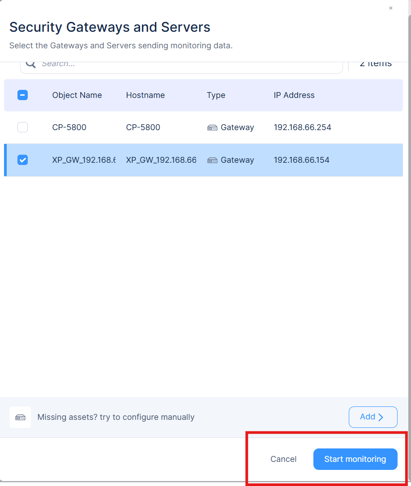
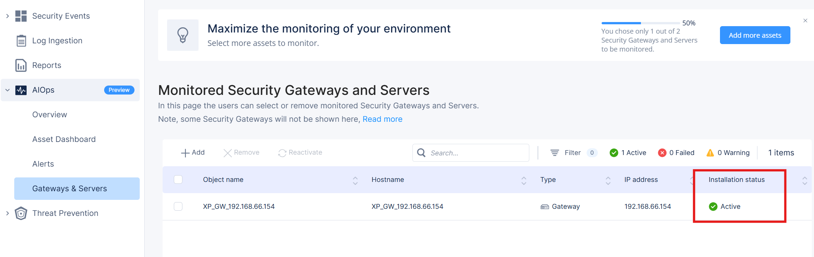

正在加载内容…
测试人员:XinPeng Jiang
测试时间:2025/3/17
测试说明
测试版本: SMS R82 hotfix take12(该原始版本R81.20 upgrade之后版本) ; GW: R81.20
配置步骤
注册infinity portal 账号
通过smartconsole登录SMS 获取token

登录infinity portal 获取token，复制token 到如下界面




导入AIops 脚本，修改脚本权限并执行。

如需重新添加GW可执行如下命令



GW添加成功
